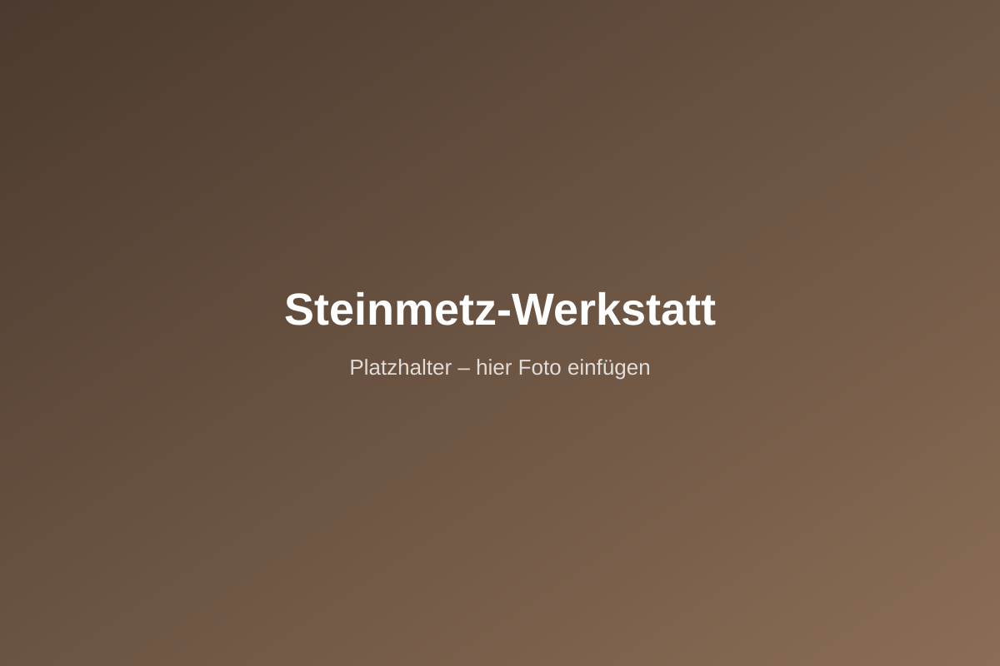
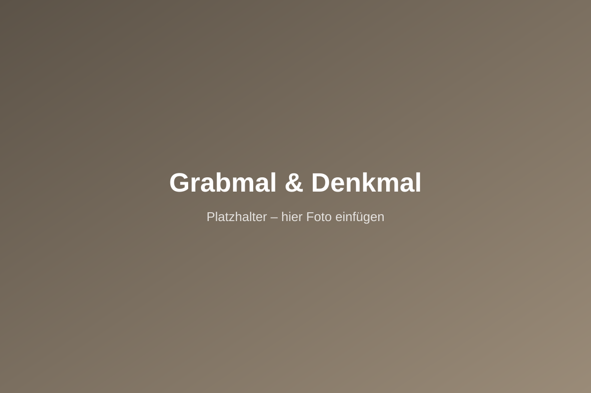
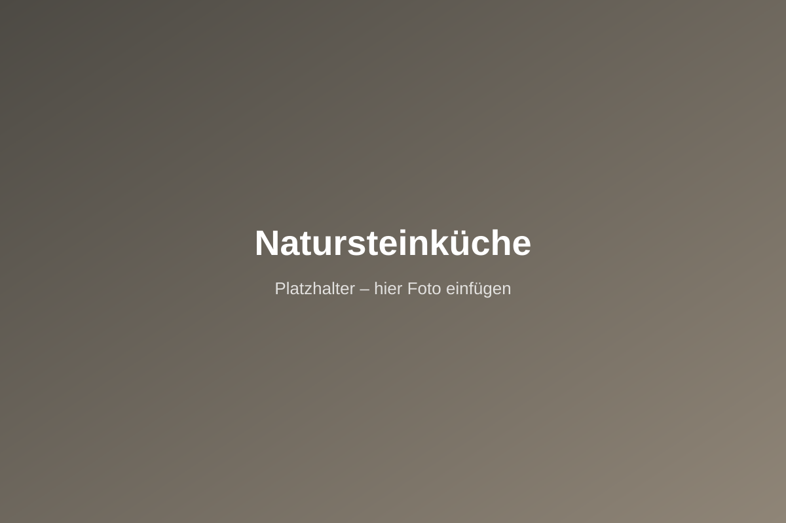
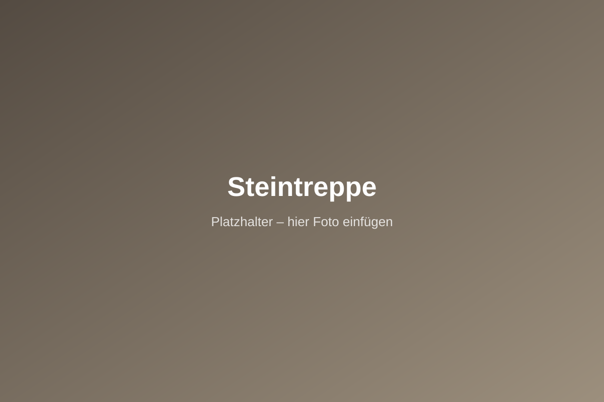
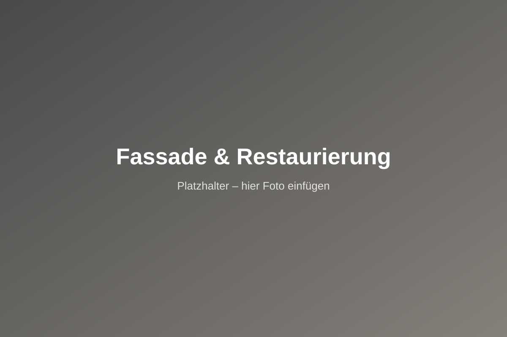
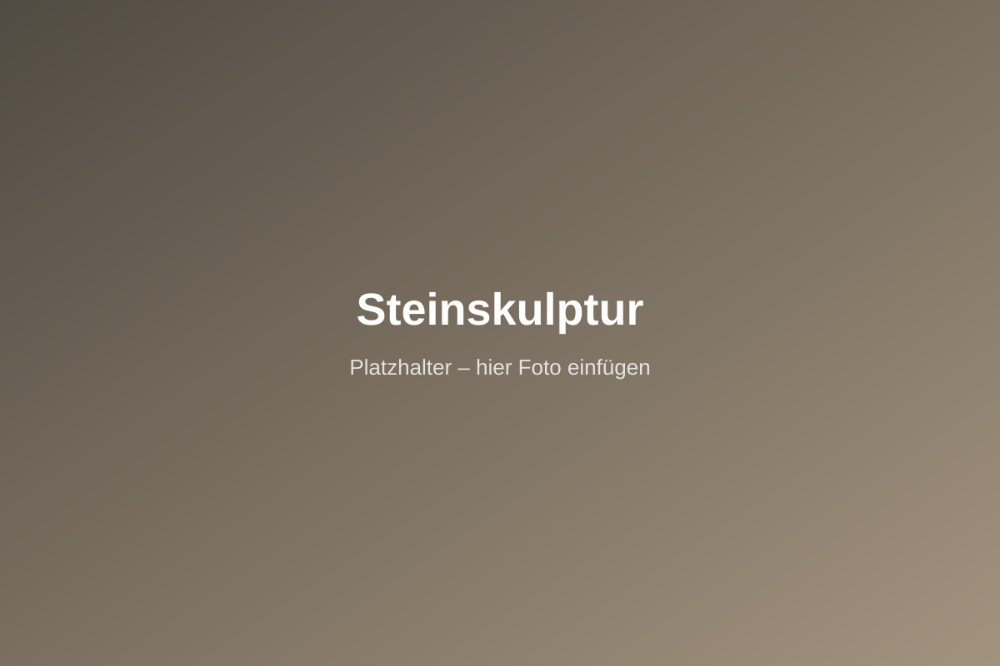
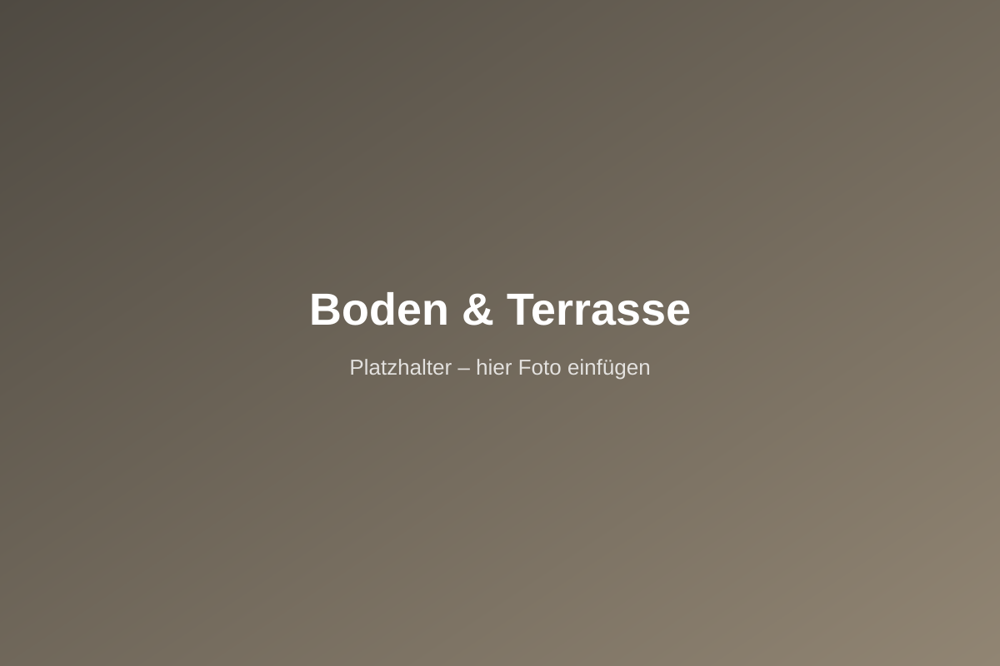

Grabmale & Denkmäler
Individuelle Gedenksteine, Urnengräber, Inschriften und pflegeleichte Gestaltungen.
Individuelle Steinmetzarbeiten für Grabmale, Wohnraum, Außenanlagen und Denkmalpflege – sorgfältig geplant, präzise gefertigt und dauerhaft verarbeitet.

Vom ersten Entwurf bis zur fachgerechten Montage: Jede Arbeit wird auf Material, Ort und gewünschte Gestaltung abgestimmt.
Individuelle Gedenksteine, Urnengräber, Inschriften und pflegeleichte Gestaltungen.
Arbeitsplatten, Waschtische, Fensterbänke und Maßanfertigungen aus Naturstein.
Stufen, Bodenbeläge, Terrassen und Eingangsbereiche – robust und zeitlos.
Reinigung, Ergänzung, Instandsetzung und denkmalgerechte Arbeiten an bestehenden Steinen.
Einzelstücke, Schriftzüge, Brunnen und künstlerische Steinarbeiten nach Wunsch.
Materialauswahl, Aufmaß, Entwurf, Fertigung und professionelle Einbauarbeiten.
Beispiele für die Vielfalt der Steinmetzarbeit. Die Platzhalterbilder können durch eigene Projekt- und Werkstattfotos ersetzt werden.






Stephan Martin steht für traditionelles Steinmetzhandwerk, sorgfältige Verarbeitung und individuelle Lösungen. Vom Entwurf über die Materialauswahl bis zur Montage begleitet er Projekte persönlich und transparent.
Aktuelle Stellen und Ausbildungsangebote. Bitte vor Veröffentlichung die tatsächlichen Positionen, Anforderungen und Kontaktdaten ergänzen.
Sie fertigen und montieren Natursteinarbeiten, arbeiten mit modernen Maschinen und übernehmen qualitätssichernde Tätigkeiten. Erfahrung im Steinmetzhandwerk ist willkommen.
Sie lernen den Umgang mit Naturstein, Werkzeugen, Zeichnungen und modernen Fertigungstechniken. Sorgfalt, Zuverlässigkeit und handwerkliches Interesse sind wichtig.
Sie haben Interesse an Steinmetzarbeit, Restaurierung oder Organisation? Senden Sie eine Initiativbewerbung mit Lebenslauf und kurzen Angaben zu Ihren Erfahrungen.
Für Angebote, Beratungstermine oder Bewerbungen. Bitte vor Veröffentlichung Adresse, Telefonnummer und E-Mail-Adresse ergänzen.